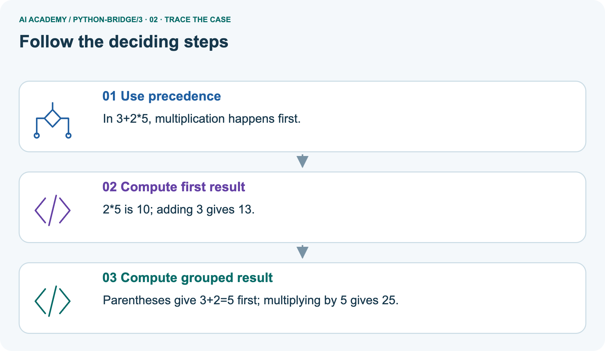
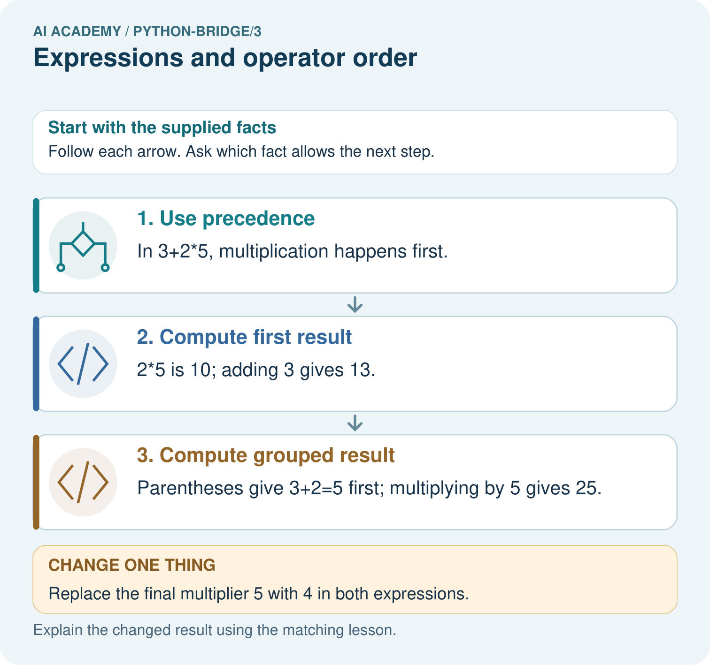
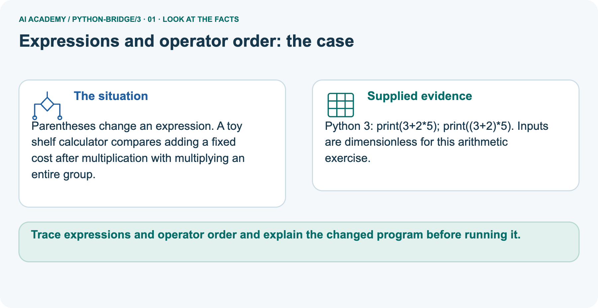
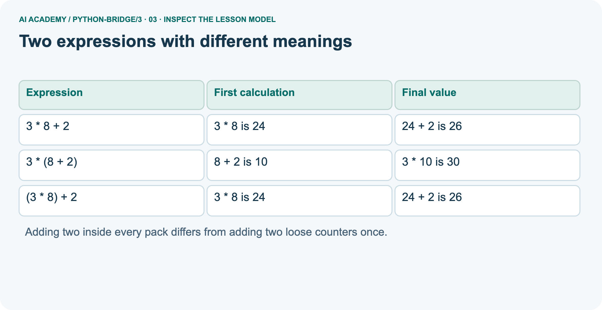
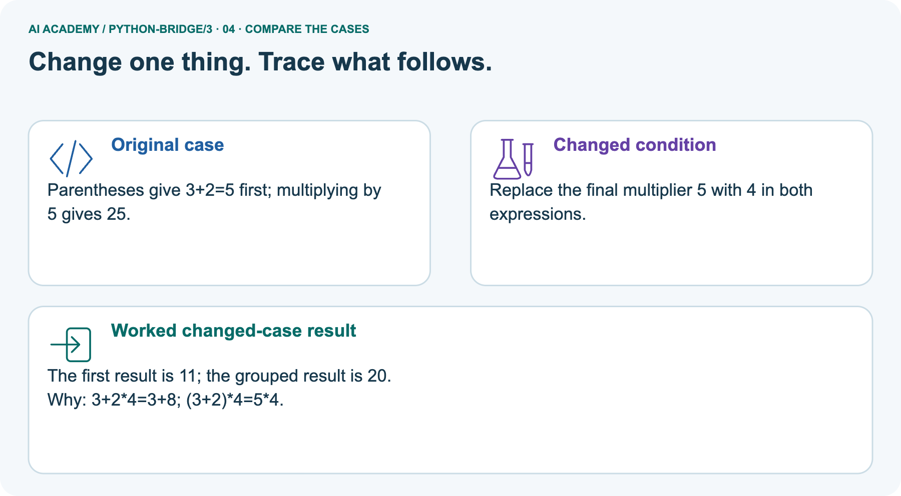
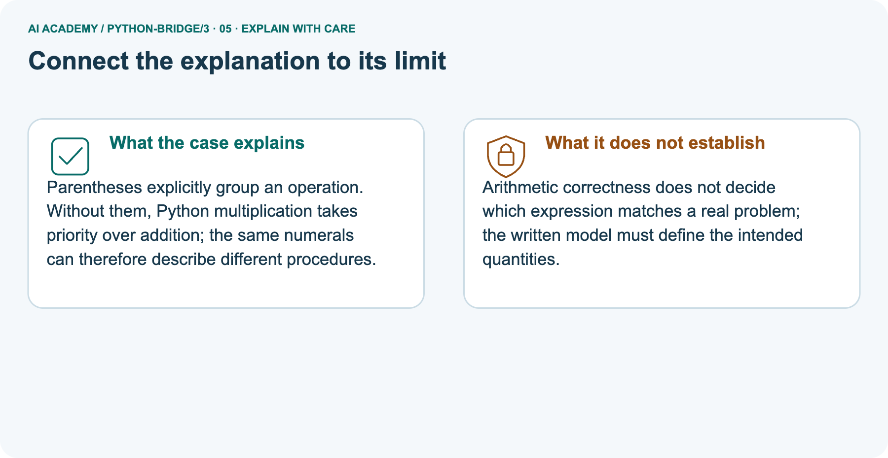
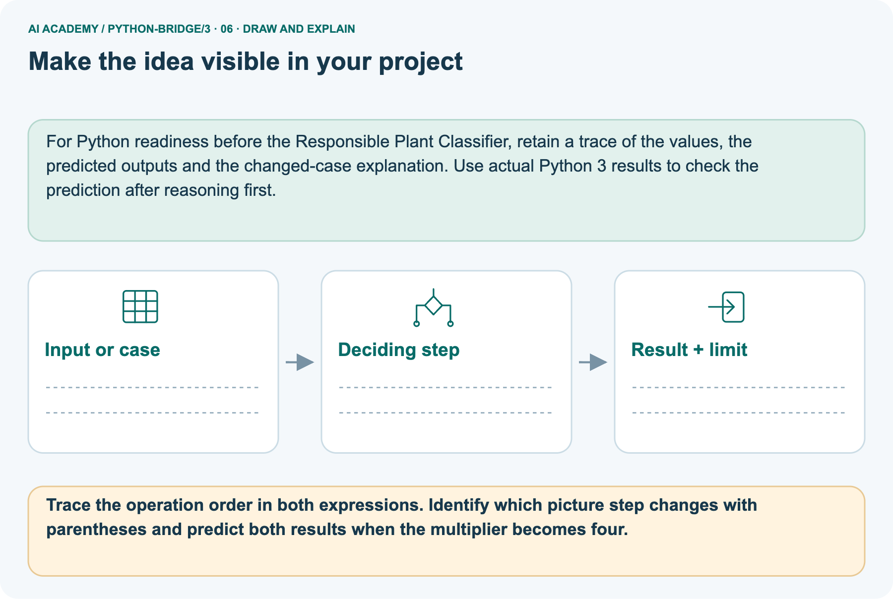

AI Academy · Python readiness bridge · Teacher guide
Expressions and operator order
Learn to understand, design, build, test and explain AI systems responsibly.
Project: Python readiness portfolio
THE CONNECTED WEEK
Teach precedence through explicit groupings and concrete assumptions.
Supply complete scripts, isolate zero-divisor errors and assess an explained fresh expression after exposure checks.
Keep one habit: Ask which operation groups first, what quantity it represents and whether the inputs satisfy its interpretation.
Main lesson · Section 1
Prepare the connected bridge lesson
Check prior exposure and keep execution practice distinct from paper reasoning.
Goal and main plan
Primary target: Evaluate numeric expressions using Python’s grouping rules
| Session | Sequence and minutes | Resources |
|---|---|---|
| Session 1 · Understand · 45 min | 0–7: recall and prerequisite; 7–15: inspect the concrete case and predict; 15–30: teacher models the worked trace; 30–40: learners explain a step using the text and visual; 40–45: check the core idea. | Sections 1–6; record the brief recall in the workbook. |
| Session 2 · Practise · 45 min | 0–5: retrieve the procedure; 5–15: W2 completion practice; 15–23: explain and check with a partner; 23–30: each learner answers the misconception check; 30–40: targeted reteaching or a harder variation; 40–45: prepare the investigation. | Sections 7–10; use the matching workbook W2 and misconception check. |
| Session 3 · Investigate and transfer · 45 min | 0–5: retrieve the decision rule; 5–20: investigate or trace; 20–30: start the independent case; 30–38: connect the project; 38–43: act on feedback; 43–45: plan the return check. | Use “Run the investigation”, “Connect your project”, “Show what you know”, “Study a complete case” and “Try a new case independently”. Give extra time for the full task set. If this week has a coding lab, use its named section; section numbers can change when extra explanations are included. |
This is a starting allocation of 135 minutes, not a validated duration. Preserve all named topics. Schedule extra time for connected examples, the full investigation, independent cases and project building.
Repeated copies of a case share one recorded attempt; they are not new evidence.
Retrieval answer guidance
Retrieval and prerequisite guidance
Without opening the old lesson, explain one key idea from Values variables and types. Give an example and a mistake that the idea helps you avoid.
Look for: Distinguish integer, floating-point, text and Boolean values
Reference example, not the only acceptable wording: 12 is int; 1.5 is float; "12" is str; False is bool; "False" is str. Quotes mark text even when the characters spell a Boolean name.
Teach grouping through meaning before mnemonic rules. Multiplication and division share precedence; addition and subtraction share precedence.
This lesson deliberately limits whole-group examples to nonnegative integers and positive divisors.
Reference: Python tutorial arithmetic, https://docs.python.org/3/tutorial/introduction.html, and expression precedence, https://docs.python.org/3/reference/expressions.html#operator-precedence.
Materials and readiness
Python 3 editor with expressions.py and separate source/output areas
Counters or sketches of packs with separate loose items
Blank expression, grouping, expected and observed columns
Numeric addition gives 10; text concatenation gives the string 82. This week uses numeric values.
End goal
Trace expressions and operator order and explain the changed program before running it.
Earlier wording, alternatives and picture transcripts
Teach the learning cycle
Values variables and types
Outcomes
Evaluate numeric expressions using Python’s grouping rules
Use parentheses to express the intended calculation
Distinguish ordinary division, whole groups and a remainder
Preparation
Prerequisite answer
End goal for the pictorial case
This added worked case illustrates the week’s main idea. Retain all original and connected topics; schedule its practice within the teaching cycle.
Main lesson · Section 2
Teach the written grouping and the arithmetic separately
Label the packing, dimensionless picture and same-precedence records.
State the counting model and Python workflow
Three packs each contain eight counters, with two more loose counters. First count the packed counters, then add the loose ones. A program needs that structure, not just the right numbers.
This week you will predict expressions, make grouping visible and check division against a physical interpretation.
Use numeric values in a fresh Python 3 script called expressions.py. Keep expected and observed results separate as before. Multiplication and division group more tightly than addition and subtraction.
Parentheses let you state a different grouping. A correct calculation still depends on correct quantities and units.
The script displays 26. Replacing the total expression with packs * (per_pack + loose) displays 30, because it adds two to every pack. Parentheses are not decoration: they can change the represented situation.
Write a brief phrase for each group before running.
Trace the same-precedence reference
print(20 - 6 - 2)
print(20 - (6 - 2))
print(12 / 3 * 2)The first line groups subtraction from left to right: (20 - 6) - 2 gives 12. The second gives 16. Multiplication and division share a precedence level, so 12 / 3 * 2 groups as (12 / 3) * 2 and displays 8.0, not 2.0.
Ordinary / division produces a float, even when the result is mathematically whole.
print(16 - 5 - 3)
print(16 - (5 - 3))
print(18 / 3 * 2)
Read the dimensionless pair
Compare two dimensionless arithmetic expressions: adding 3 after 2*5 versus multiplying the whole 3+2 group by 5. Match each group to a written model before using it for a real counting task.
Python 3: print(3+2*5); print((3+2)*5). Inputs are dimensionless for this arithmetic exercise.
Trace precedence and parentheses



Read the picture one step at a time
Parentheses explicitly group an operation. Without them, Python multiplication takes priority over addition; the same numerals can therefore describe different procedures.
print(3 + 2 * 5)
print((3 + 2) * 5)
Predict the multiplier change
Change: Replace the final multiplier 5 with 4 in both expressions.
Prediction: The first result is 11; the grouped result is 20.
Reason: 3+2*4=3+8; (3+2)*4=5*4.
State model/domain limits
Arithmetic correctness does not decide which expression matches a real problem; the written model must define the intended quantities.
Cover the result. Ask learners to name the inputs and predict the next step. Uncover one step, connect the icon to the actual procedure, and explain its evidence. Then change the supplied condition and compare.
The picture is a representation; it does not document execution of a real AI model.
Additional guided key
In 18 - 4 * 3 multiplication groups first, giving 18 - 12 = 6. In (18 - 4) * 3 the parentheses give 14 * 3 = 42.
Exit: 23 // 4 gives 5 trays and 23 % 4 gives 3 tiles; 5 * 4 + 3 = 23. / gives 5.75, a ratio rather than both requested whole-number counts.
Earlier wording, alternatives and picture transcripts
| Term | Meaning |
|---|---|
| Expression | Code evaluated to produce a value |
| Operator | A symbol such as + or * that specifies an operation |
| Precedence | Rules that determine how an expression is grouped |
| Parentheses | Symbols that make a grouping explicit |
| Remainder | The amount left after forming whole groups |
Two expressions with different meanings
Model the reasoning aloud
Use the complete worked example below before asking learners to complete W2. Reveal a small part, invite a prediction, then explain the deciding step.
These teacher notes contain solutions; do not reveal the independent case answer during modelling.
| Thinking move | Teacher prompt |
|---|---|
| Plan | What is given? What is the question? Which procedure fits these facts? |
| Do | Point to each input and intermediate step in the worked trace. Name the rule that allows the next step. |
| Check | Does the output answer the question? Which assumption or limitation prevents a larger claim? |
Use the diagram and verbal explanation together. Ask learners to match a sentence to a specific visual step; do not assign learners fixed visual or auditory learning styles.
A pictorial worked case: Expressions and operator order
The facts we will use



Why this result follows
What this example does not establish
Change one thing in the pictured case
Ask while showing the picture
Main lesson · Section 3
Guide the trace, then fade the help
Collect predictions before execution or feedback.
Main completion task and key
Completion task: Predict 16 - 5 - 3, 16 - (5 - 3), and 18 / 3 * 2. Write the grouping, run each line and record actual results separately.
Teacher check: (16 - 5) - 3 is 8; 16 - (5 - 3) is 14; (18 / 3) * 2 is 12.0. Record any observed discrepancy and check the saved expression rather than copying expected results.
Start by identifying the given inputs together. Leave the intermediate steps blank. If needed, model one step, then withdraw that help on the next step. Move to a full trace only when the partial trace is understood.
For partners, alternate explainer and checker; collect a response from every learner before discussion.
Individual misconception check
Use the worked case for Expressions and operator order. Proposed explanation: “All operations are read left to right regardless of precedence”. Decide whether this explanation is supported.
Point to the step or supplied fact that decides; explain your repair if needed.
Expected correction: Establish grouping first; only operations at the same applicable precedence level group left to right here.
Collect explanations, not only yes/no votes. If a misunderstanding is common, re-model the relevant step for the class.
If it affects a few learners, give a short targeted group explanation while others solve a more demanding variation.
Pictorial question and changed-case key
Trace the operation order in both expressions. Identify which picture step changes with parentheses and predict both results when the multiplier becomes four.
Without grouping, multiply before adding: 13. With grouping, add before multiplying: 25. Changing the multiplier to 4 gives 11 and 20 respectively.
Changed-case reasoning: The first result is 11; the grouped result is 20. 3+2*4=3+8; (3+2)*4=5*4.
Collect each learner’s explanation before discussion. Use the first missing connection between input, deciding step and result to choose support. This question is worked-case practice, not fresh mastery evidence.
Support and alternative plan
| Time or stage | Teacher action |
|---|---|
| Session 1 start to 7 minutes | Retrieve numeric addition versus text joining. |
| 7 to 20 minutes | Model packs and loose counters with the diagram; complete W1. |
| 20 to 33 minutes | Read equal-precedence expressions from left to right and predict W2. |
| 33 to 45 minutes | Run W2, compare results and collect the guided explanation. |
| Session 2 start to 8 minutes | Revisit one grouping disagreement with counters or brackets. |
| 8 to 20 minutes | Model 17 counters in groups of five and complete W3. |
| 20 to 35 minutes | Collect W4 independently, including the reconstruction check. |
| 35 to 45 minutes | Complete W5 and the exit, recording input assumptions and units. |
Use the worked example in Sections 3 and 6. Collect a prediction before revealing its result; ask the learner to point to each intermediate fact.
Colour the pack calculation and loose quantity separately, then use the same grouping in code. Provide an operation legend without doing W4.
Extension: devise two different expressions that agree for one input and differ for another, and explain the testing consequence.
Earlier wording, alternatives and picture transcripts
Compact alternative: this two-session sequence covers selected core tasks. Use the three-session weekly plan for the full lesson, independent transfer, feedback and project work; allow extra time for extensions.
Reduce help deliberately
Individual reasoning check
Pictorial practice question
Reasoned teacher answer
Main lesson · Section 4
Run the complete supplied investigation
Preserve expected, observed and paper-trace records.
Supplied case materials and checked guidance
W2 outputs 8, 14, 12.0 from stated grouping. 17/5=3.4,17//5=3,17%5=2; whole-count interpretation assumes nonnegative counters and positive group size. Zero divisor raises ZeroDivisionError. Selected independent outputs 4, 18, then 3.4 3 2; grouped remainder (17+5)%5=2. Explain precedence and prior exposure rather than award independence for a memorised number. Earlier W4 task has its own quantities.
Diagnose misconceptions
All operations are read left to right regardless of precedence: Establish grouping first; only operations at the same applicable precedence level group left to right here.
Parentheses never change a value: Compare the two packs expressions and their different stories.
Ordinary division always returns an integer: / produces a float for these integer operands.
A remainder can be as large as the group size: For this positive whole-group case, another complete group would then be possible.
Use Section 9 for the evidence ledger. Add a boundary or missing-input case and record the expected response before checking. More successful repeats of one case do not establish wider coverage.
Choose accessible support
| What the response shows | Next teaching action |
|---|---|
| Missing or misread facts | Read the case aloud, mark supplied versus unknown facts, and let the learner restate it. |
| Wrong procedure | Return to the deciding step in the worked case. Contrast it with the proposed incorrect explanation. |
| Arithmetic or implementation error | Trace intermediate values or lines; preserve the first mismatch and retry that step. |
| Correct result without a reason | Ask for a trace and a changed case before marking independent understanding. |
| An unsupported wider claim | Ask which supplied evidence supports the claim and which further observation would be needed. |
Offer an oral explanation, drawing, enlarged visual or fewer examples when that removes a reading/writing barrier. Keep the same reasoning goal.
Stretch secure learners by changing a boundary or assumption and asking them to defend the effect, not simply by assigning more of the same questions.
Earlier wording, alternatives and picture transcripts
Match the support to the first error
Main lesson · Section 5
Assess the selected bridge transfer task
If a learner has seen this exact case, use a fresh parallel input and record exposure/support.
Selected independent task and checked key
Selected case: Predict each line. Explain which calculation groups addition before division. What would (17+5)%5 return, and how do /, // and % differ for the supplied positive integers?
print((17 + 5) // 5)
print(17 + 5 // 5)
print(17 / 5, 17 // 5, 17 % 5)
The first line is4 because22//5=4. The second is18 because5//5 is evaluated before adding17. The final line is3.4 3 2: ordinary division, whole quotient and remainder for17 divided by5. (17+5)%5 is2.
Parentheses choose the grouped calculation; they are not optional when that meaning is intended.
Judge trace and support
| Dimension | Evidence required |
|---|---|
| Explanation | Names the applicable idea or procedure and ties it to the supplied facts. |
| Trace and result | Preserves the given inputs and shows the relevant intermediate steps; distinguishes a prediction from an observed execution. |
| Limits | States the assumptions, missing evidence or conditions under which the result would change. |
Record each dimension as not yet, with support, or independent. Accept a valid alternative procedure with a defensible trace.
Do not penalise an honestly recorded model failure if the learner correctly explains its evidence and limits.
Give one repair action
Name the earliest unsupported step and give one action to repair it. Have the learner make that repair now and explain why. Then assess the relevant skill on a fresh, fully specified case.
Confirm it was not previously practised with feedback; solve and check the new case before assigning it. A follow-up design prompt is a starting brief, not automatically an equivalent test.
W1 State the intended grouping
Write an expression for three packs of eight counters plus two loose counters. Explain why adding two within the parentheses for every pack describes a different situation.
3 * 8 + 2 or (3 * 8) + 2 gives 26. 3 * (8 + 2) gives 30 and adds two to each of three packs, not two once.
W2 Predict then test expressions
Predict 16 - 5 - 3, 16 - (5 - 3), and 18 / 3 * 2. Write the grouping, run each line and record actual results separately.
(16 - 5) - 3 is 8; 16 - (5 - 3) is 14; (18 / 3) * 2 is 12.0. Record any observed discrepancy and check the saved expression rather than copying expected results.
W3 Explain whole groups
For 17 counters in groups of 5, explain /, // and %. Show a multiplication-and-addition check for the complete groups and remainder.
/ gives 3.4; // gives 3; % gives 2. The reconstruction is 3 * 5 + 2 = 17, with remainder 2 less than group size 5. Only three complete groups can be made.
W5 Check a limit
Explain why a group size of zero must be excluded. State the assumptions that let complete groups and a remainder describe the packing task.
A zero-size group cannot define how many groups consume the counters; Python division by zero raises ZeroDivisionError.
The physical task uses whole nonnegative counters and a positive whole group size, so the remainder is between zero and one less than group size.
Earlier wording, alternatives and picture transcripts
Guided and exit questions
In 18 - 4 * 3 multiplication groups first, giving 18 - 12 = 6. In (18 - 4) * 3 the parentheses give 14 * 3 = 42.
Exit: 23 // 4 gives 5 trays and 23 % 4 gives 3 tiles; 5 * 4 + 3 = 23. / gives 5.75, a ratio rather than both requested whole-number counts.
W1 State the intended grouping
W2 Predict then test expressions
W3 Explain whole groups
W4 Translate a new situation independently
Four trays hold six tiles each and five tiles are loose. Write and evaluate the total expression. Then pack the total into complete groups of four and find the remainder. Explain why 4 * (6 + 5) is wrong for this story.
4 * 6 + 5 gives 29 tiles; 29 // 4 gives 7 groups and 29 % 4 gives 1 left. 7 * 4 + 1 reconstructs 29. 4 * (6 + 5) gives 44, adding five to every tray instead of once.
W5 Check a limit
Independent assessment and fresh retry
W4 needs 29, 7 and 1 with the meaning of the extra five and a reconstruction. After support, retry three trays of seven plus four loose: 25 total; groups of six give 4 complete groups and 1 left.
Require an expression and explanation before a device result.
Assess independent transfer
Selected case answer
Feedback that the learner uses
Main lesson · Section 6
Keep the portfolio, support and delayed check
Track code execution separately from a correct paper trace.
Project evidence
Add a labelled expressions and operator order evidence sheet to Python readiness portfolio. Show how you can evaluate numeric expressions using python’s grouping rules.
Use the supplied fictional case and keep its inputs, intermediate steps, calculation or prediction, and limitation. Connect this record to last week’s record; a matching answer without a trace is insufficient.
For Python readiness before the Responsible Plant Classifier, retain a trace of the values, the predicted outputs and the changed-case explanation. Use actual Python 3 results to check the prediction after reasoning first.
Support and selected assessment guidance
Colour the pack calculation and loose quantity separately, then use the same grouping in code. Provide an operation legend without doing W4.
Extension: devise two different expressions that agree for one input and differ for another, and explain the testing consequence.
Selected independent answer: The first line is4 because22//5=4. The second is18 because5//5 is evaluated before adding17. The final line is3.4 3 2: ordinary division, whole quotient and remainder for17 divided by5. (17+5)%5 is2. Parentheses choose the grouped calculation; they are not optional when that meaning is intended.
Keep earlier W4 transfer as additional practice; do not substitute its numbers or key for this selected task. Record prior exposure and use a fresh parallel case after support.
Delayed return
Suggested return points in this level: python-bridge/4, python-bridge/6, python-bridge/9. Use actual classroom dates, adjusting for holidays and gaps.
One, three and six teaching weeks are scheduling choices, not a claimed optimal spacing.
At a delayed check, ask for the idea from memory and a changed application. Compare with the earlier independent response and record support used.
For a new level, revisit the previous capstone before checking the new prerequisites.
| Record | Teacher evidence |
|---|---|
| Learner code and date | |
| Concept and case used; prior exposure | |
| Explanation / trace / limits | |
| Support and first repair | |
| Changed case and delayed outcome | |
| Next teaching action |
Use the evidence to choose reteaching or the next step. A completed page, confidence rating or attractive project does not by itself demonstrate understanding.
Bridge to the next topic
Week 4 introduces comparisons and Boolean conditions that express whether requirements hold.
Retain the project ledger and assess a changed case after support. Check the relevant prerequisite before carrying this component forward.
Earlier wording, alternatives and picture transcripts
Plan the delayed return
Project evidence from this case
Reference bank and extra practice
Choose the reference that helps your next step.
Reference · Alternative planning checklist
Reference · Section 7
Reference · Alternative planning checklist
Use alongside the main route without repeating the teaching cycle.
Planning and assessment reference
Teaching target: Evaluate numeric expressions using Python’s grouping rules
Prepare the labelled worked-case picture, the matching workbook, fictional input cards and a place for individual responses. Check a local Python 3 environment before class; have a paper-trace version ready.
| Session | Plan | Resources |
|---|---|---|
| Session 1 · Understand · 45 min | 0–7: recall and prerequisite; 7–15: inspect the concrete case and predict; 15–30: teacher models the worked trace; 30–40: learners explain a step using the text and visual; 40–45: check the core idea. | Sections 1–6; record the brief recall in the workbook. |
| Session 2 · Practise · 45 min | 0–5: retrieve the procedure; 5–15: W2 completion practice; 15–23: explain and check with a partner; 23–30: each learner answers the misconception check; 30–40: targeted reteaching or a harder variation; 40–45: prepare the investigation. | Sections 7–10; use the matching workbook W2 and misconception check. |
| Session 3 · Investigate and transfer · 45 min | 0–5: retrieve the decision rule; 5–20: investigate or trace; 20–30: start the independent case; 30–38: connect the project; 38–43: act on feedback; 43–45: plan the return check. | Use “Run the investigation”, “Connect your project”, “Show what you know”, “Study a complete case” and “Try a new case independently”. Give extra time for the full task set. If this week has a coding lab, use its named section; section numbers can change when extra explanations are included. |
Before class, solve the supported practice: Predict 16 - 5 - 3, 16 - (5 - 3), and 18 / 3 * 2. Write the grouping, run each line and record actual results separately.
Reasoned practice answer: (16 - 5) - 3 is 8; 16 - (5 - 3) is 14; (18 / 3) * 2 is 12.0. Record any observed discrepancy and check the saved expression rather than copying expected results.
Check every learner before discussion: Use the worked case for Expressions and operator order. Proposed explanation: “All operations are read left to right regardless of precedence”.
Decide whether this explanation is supported. Point to the step or supplied fact that decides; explain your repair if needed.
Misconception repair: Establish grouping first; only operations at the same applicable precedence level group left to right here.
Support: read the exact case aloud, enlarge the labelled picture, supply input cards and model only the first deciding step. Accept a spoken explanation or drawing; retain the reasoning goal.
Extension: Replace the final multiplier 5 with 4 in both expressions. Require a prediction and a reason before comparing. Expected result: The first result is 11; the grouped result is 20. Reason: 3+2*4=3+8; (3+2)*4=5*4.
Independent assessment: withhold the reserved answer until the learner has attempted the new case. Record support separately from correctness.
| Criterion | Not yet | With support | Independent |
|---|---|---|---|
| Explanation | Names an answer without a deciding fact | Uses a hint to link fact and decision | Explains the deciding fact in own words |
| Trace or test | Cannot connect input and result | Completes steps with prompts | Traces or tests a changed case accurately |
| Limits and revision | Claims more than evidence supports | Names a limit after a prompt | States a defensible limit and useful next test |
Project checkpoint: Python readiness portfolio. Keep runnable code, predictions, actual outputs, one repaired error and an explanation of a function on changed inputs.
Use the weekly teacher answer for topic-specific reasoning. A saved progress tick is an activity record; judge mastery from the learner’s explanation and evidence.
Reference · Feedback and evidence records
Reference · Section 8
Reference · Feedback and evidence records
Keep individual first attempts separate from supported rehearsal.
Feedback and repair
Use the two formative questions as supported practice, not as independent mastery scores. Discuss the deciding evidence rather than accepting a guessed selection.
The feedback comes from the reviewed public worked case. Do not reveal the separately reserved independent teacher answer until the learner has attempted that case.
Ask students to predict before running code. Preserve errors and actual outputs; collect a changed test and an explanation. The branch-boundary and indexing lessons deliberately include failure cases.
Use the earlier worked-explanation links to address a specific missing building block, then return to the current question. Adapt this suggestion after observing the learner; it is not an automatic diagnosis.
Collect the completed-work portfolio as evidence. Record support separately from correctness, and assess explanation, trace/test and limitations. Progress ticks and quiz selections alone do not establish mastery.
Reference · Teach with the six pictures
Reference · Section 9
Reference · Teach with the six pictures
Use the relevant picture for a specific reasoning move.
01. Expressions and operator order: the case



Parentheses change an expression. A toy shelf calculator compares adding a fixed cost after multiplication with multiplying an entire group. Supplied facts: Python 3: print(3+2*5); print((3+2)*5).
Inputs are dimensionless for this arithmetic exercise.
Point to the given fact that matters most. Explain why it matters.
Teacher prompt: Point to the given fact that matters most. Explain why it matters. Ask learners to describe one label or arrow in ordinary words. Use the adjacent transcript if the image is difficult to see.
02. Follow the deciding steps
Use precedence: In 3+2*5, multiplication happens first. → Compute first result: 2*5 is 10; adding 3 gives 13. → Compute grouped result: Parentheses give 3+2=5 first; multiplying by 5 gives 25.
Point to each numbered stage and explain which recorded input it uses.
Teacher prompt: Point to each numbered stage and explain which recorded input it uses. Ask learners to describe one label or arrow in ordinary words. Use the adjacent transcript if the image is difficult to see.
03. Two expressions with different meanings



Two expressions with different meanings. 3 * 8 + 2 | 3 * 8 is 24 | 24 + 2 is 26. 3 * (8 + 2) | 8 + 2 is 10 | 3 * 10 is 30. (3 * 8) + 2 | 3 * 8 is 24 | 24 + 2 is 26
Read the labels and values. Explain the relationship the model shows.
Teacher prompt: Read the labels and values. Explain the relationship the model shows. Ask learners to describe one label or arrow in ordinary words. Use the adjacent transcript if the image is difficult to see.
04. Change one thing. Trace what follows.



Original case: Parentheses give 3+2=5 first; multiplying by 5 gives 25. Changed condition: Replace the final multiplier 5 with 4 in both expressions. Expected result: The first result is 11; the grouped result is 20.
Reason: 3+2*4=3+8; (3+2)*4=5*4.
Predict before checking the worked changed-case result. Name what changed and what the supplied facts allow you to conclude.
Teacher prompt: Predict before checking the worked changed-case result. Name what changed and what the supplied facts allow you to conclude. Ask learners to describe one label or arrow in ordinary words.
Use the adjacent transcript if the image is difficult to see. Changed-case reasoning: 3+2*4=3+8; (3+2)*4=5*4.
05. Connect the explanation to its limit



Parentheses explicitly group an operation. Without them, Python multiplication takes priority over addition; the same numerals can therefore describe different procedures.
Limit: Arithmetic correctness does not decide which expression matches a real problem; the written model must define the intended quantities.
Explain the case, then point to a limit on the claim.
Teacher prompt: Explain the case, then point to a limit on the claim. Ask learners to describe one label or arrow in ordinary words. Use the adjacent transcript if the image is difficult to see.
Keep the stated scope: Arithmetic correctness does not decide which expression matches a real problem; the written model must define the intended quantities.
06. Make the idea visible in your project



For Python readiness before the Responsible Plant Classifier, retain a trace of the values, the predicted outputs and the changed-case explanation. Use actual Python 3 results to check the prediction after reasoning first.
Draw your input, deciding step, result and limit. Supported question: Trace the operation order in both expressions.
Identify which picture step changes with parentheses and predict both results when the multiplier becomes four.
Draw your project trace and justify the deciding step using evidence.
Teacher prompt: Draw your project trace and justify the deciding step using evidence. Ask learners to describe one label or arrow in ordinary words. Use the adjacent transcript if the image is difficult to see.
Supported practice key: Without grouping, multiply before adding: 13. With grouping, add before multiplying: 25. Changing the multiplier to 4 gives 11 and 20 respectively.
Earlier wording, alternatives and picture transcripts
Use one picture at a time. Hide a worked result before asking for a prediction, then reveal it for feedback. These are supported teaching cases; retain the separate independent assessment for a fresh first attempt.